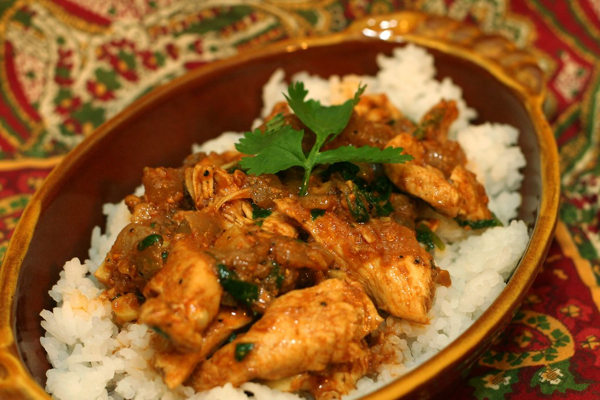

Home
Chicken Tikka Masala

Description
Chicken Tikka Masala is a beloved dish that marries the smoky flavor of
grilled marinated chicken with a rich, creamy tomato-based sauce.
Originating from the Indian subcontinent and popularized in the UK, this
curry is known for its bold spices and velvety texture. The chicken is
first marinated in yogurt and spices, then grilled or broiled, and finally
simmered in a luscious sauce infused with ginger, garlic, and garam
masala.
Perfect with rice or warm naan, Chicken Tikka Masala is a global favorite,
celebrated for its balance of heat, tang, and creaminess.
Ingredients
-
1 1/2 lbs boneless, skinless chicken thighs or breasts, cut into chunks
- 1 cup plain yogurt
- 2 Tbsp lemon juice
- 2 tsp ground cumin
- 2 tsp ground coriander
- 1–2 tsp chili powder
- 1 tsp ground turmeric
- 2 tsp garam masala (divided)
- 2 Tbsp vegetable oil
- 1 large onion, finely chopped
- 3 cloves garlic, minced
- 1 Tbsp grated ginger
- 1 can (14 oz) tomato puree
- 1 cup heavy cream
- Salt, to taste
- Fresh cilantro, for garnish
Steps
-
In a bowl, mix yogurt, lemon juice, cumin, coriander, chili powder,
turmeric, 1 tsp garam masala, and salt. Add chicken, toss to coat, and
marinate for at least 1 hour (overnight preferred).
-
Preheat oven broiler or grill. Thread chicken onto skewers and cook
until lightly charred and cooked through, about 5–7 minutes per side.
Set aside.
-
In a large pan, heat oil over medium heat. Sauté onions until golden,
then add garlic and ginger, cooking for 1–2 minutes.
-
Stir in tomato puree and remaining garam masala. Simmer for 10 minutes.
-
Add grilled chicken to the sauce. Stir in heavy cream and simmer for
another 10 minutes, until the sauce thickens.
- Garnish with fresh cilantro and serve with rice or naan.